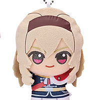
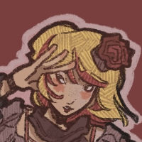

Hmmm. Make sure to use the loosest definition of "characters" that you know.

Micha (michie) (ME!!)Teenage gir |
Miré Kui (b. Mirény-syut)Miré Kui (b. Mirény-syut) is the Prince of Sanctity, the Daughter of Incomplete Trapezoids, and heir to the throne of Cinnabar Alsnah. Altruistic as a child, she was radicalized by an unknown group during her time in the Syohan Hoa'ane City. She operates a mech who is occupied by a sentient being called Sei. She founded the Cinereous Feather Collective (CFC) in her teenage years, which later went on to become the Cinereous Militarized Sector (CMS). The CMS violently overthrows the Alsnahi Cinnabar regime. She is not an amputee; she was born without an arm and a leg. Miré is a cyborg, and has a mechanical arm and leg. She lives in a world three extinctions past ours, but I'd say she's a mix of Cantonese-speaking Han Chinese and Syrian. Etymology: an altered version of the French Lemire surname mire-- "the physician", taking inspiration from the Aramaic mira/mire "queen". The surname syut is borrowed from her mother, Jin-syut (眞說), with jin (Mandarin zhēn) meaning "truth" and syut (Mandarin shuō) meaning speak/theory. Miré prefers the surname kui/夔 (the ancient Chinese god who created music, dancing, and rain). |

Camilla Fuji (Camie)Camie Fuji (b. Camilla Canhêll Fuji) is a pirate that was born in Canhêll, Syoha (archaic name for what is now known as Canhallow, Scorcrest), a town known as Syoha's largest coastal swamp shanty-town. She often visits Laexin, Alsnah to trade "tomatoes". She has POTS, which is why she uses a cane. |